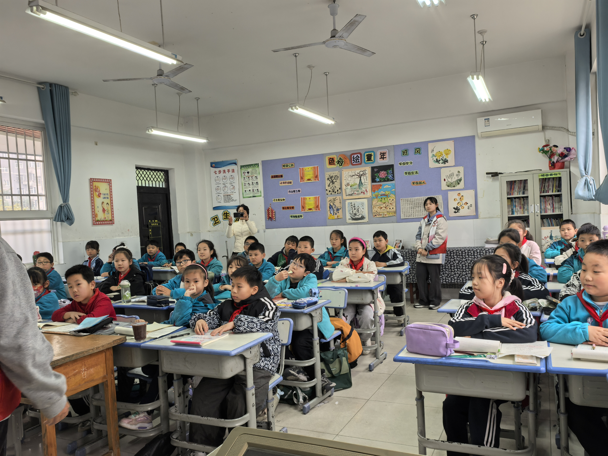
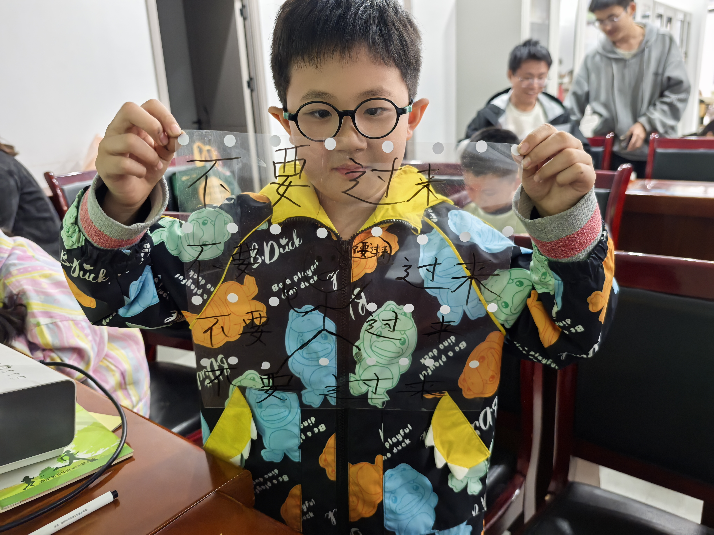
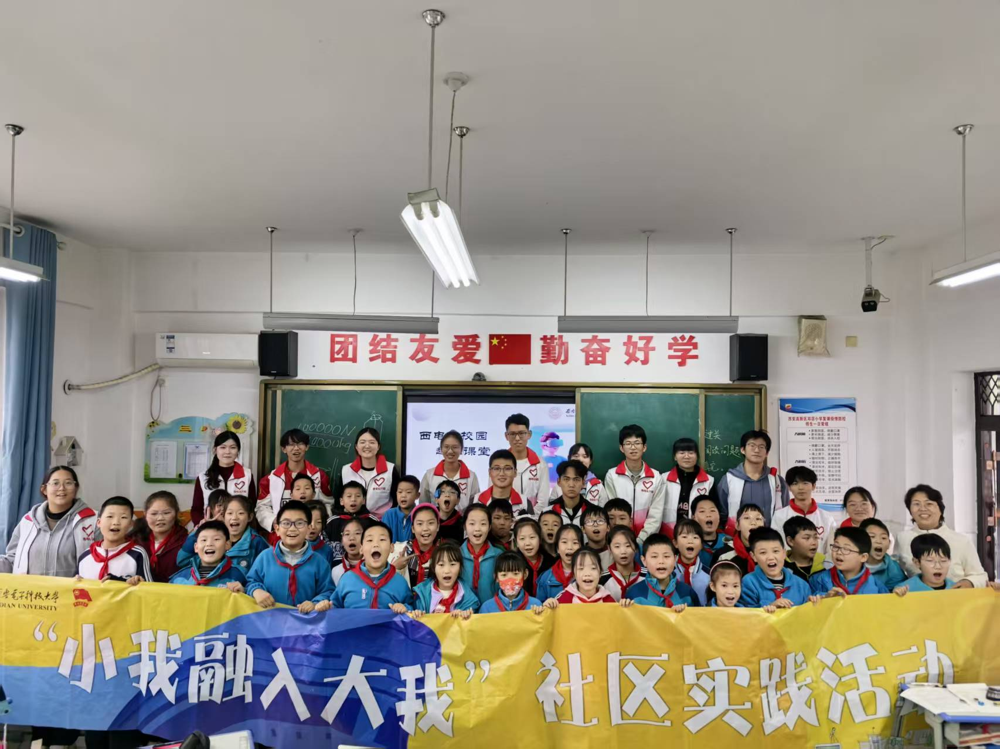
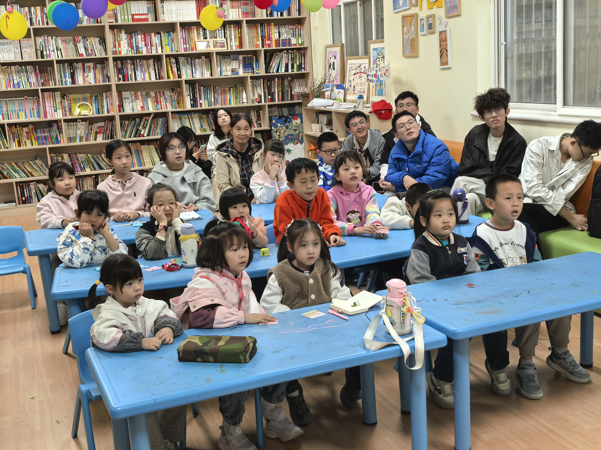
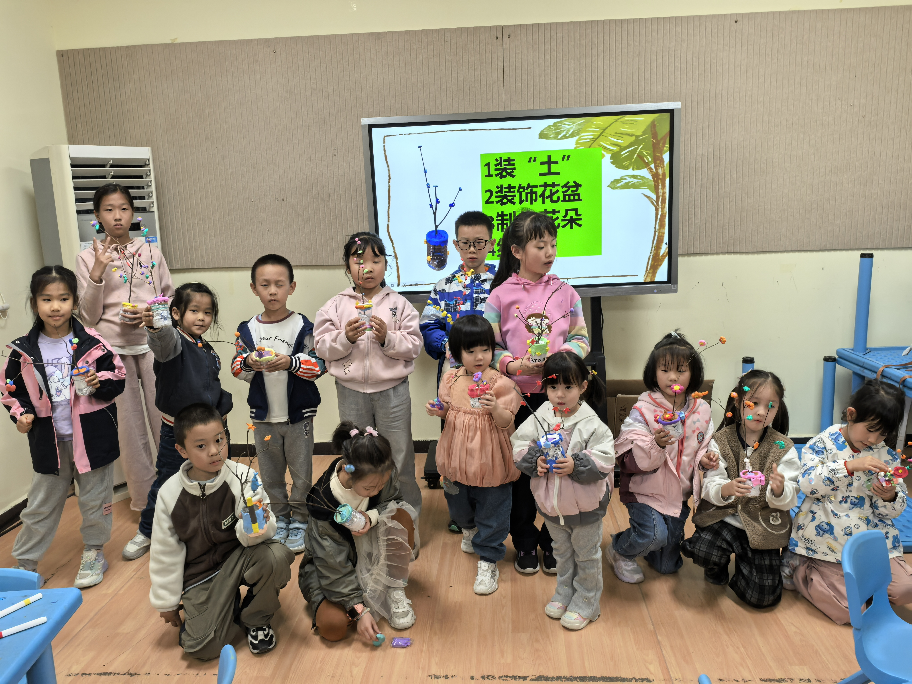
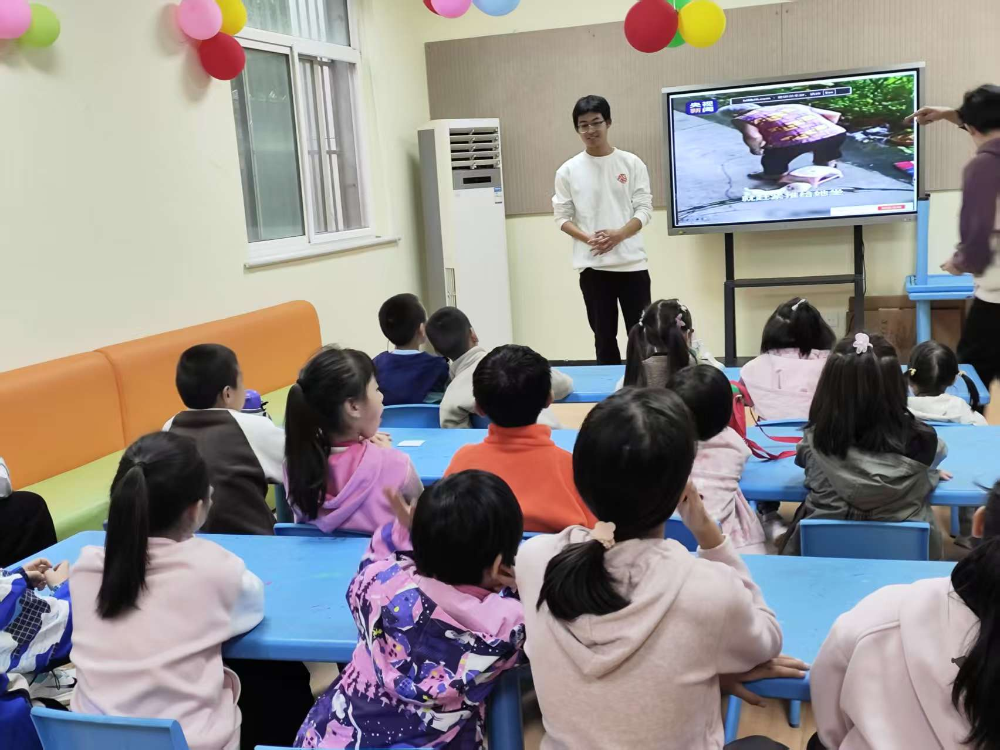
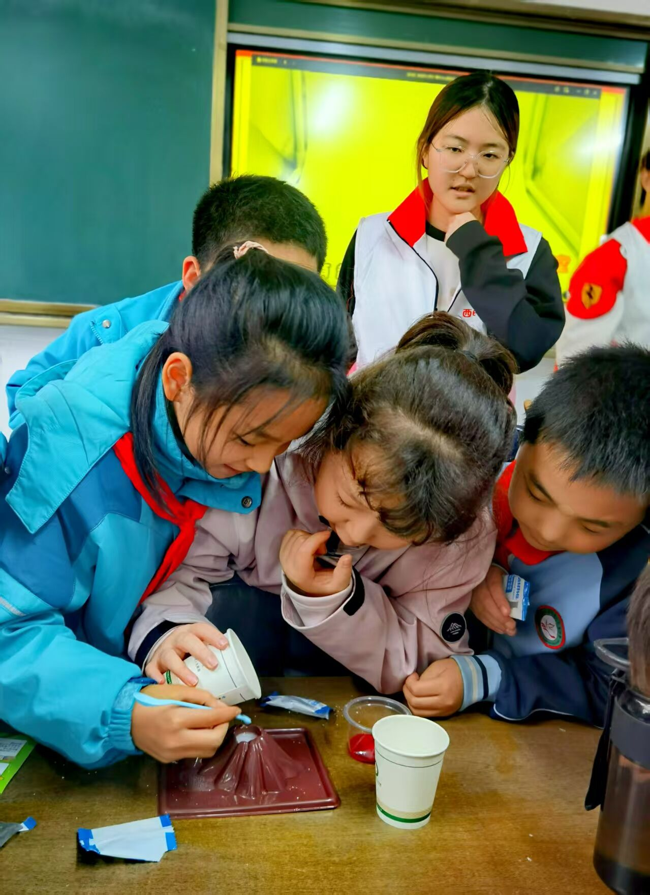

小组定位
环境教育小组是环保部对外表达与理念传播的重要窗口， 负责将垃圾分类、节能减排、绿色生活等内容 转化为可理解、可参与、可传播的活动方案。
在部门活动中，小组承担宣传内容设计、 现场讲解、知识互动与活动总结等工作， 帮助环保行动真正走进校园日常。






让环保理念从“听说过”走向“看得见、愿意做、能坚持”。
环境教育小组是环保部对外表达与理念传播的重要窗口， 负责将垃圾分类、节能减排、绿色生活等内容 转化为可理解、可参与、可传播的活动方案。
在部门活动中，小组承担宣传内容设计、 现场讲解、知识互动与活动总结等工作， 帮助环保行动真正走进校园日常。


环境教育小组通常与其他小组共同完成 “活动策划—内容制作—现场传播—后续复盘”的工作闭环。 在联合项目中，小组承担环保理念表达、 知识讲解和现场互动等职责， 与其他工作方向共同推进活动开展。